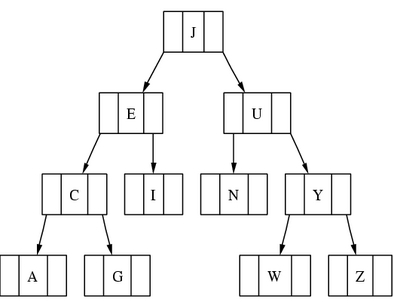
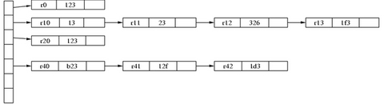
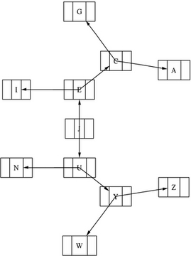

An Introduction to GraphViz
How to use command-line tools and basic GraphViz utilities to produce graphs both simple and complex.
GraphViz is a collection of tools for manipulating graph structures and generating graph layouts. Graphs can be either directed or undirected. GraphViz offers both graphical and command-line tools. A Perl interface also is available, but it is not covered here for reasons of generality. Graphical tools are not going to be discussed in this article either. Instead, this article focuses on using GraphViz from the command line.
Some users like to use command-line tools instead of graphical ones, because command-line tools can be used with a scripting language. This means you can create scripts that create dynamic graphs. Some possible uses of dynamic graphs include:
a traceroute representation of packages going to many destinations, taking the form of a tree
database relations diagrams between tables
a graphical report for your boss, e-mailed automatically from a cron job
a Web site map
UML diagrams
RPM package dependencies on RPM-based systems
source code structure diagrams
The package is available compiled for most Linux and UNIX distributions (see Resources). It also is available in source code, so you can compile it yourself. Use your favorite method of software installation to get GraphViz on your system.
GraphViz is comprised of the following programs and libraries.
The dot program: a utility program for drawing directed graphs. It accepts input in the dot language. The dot language can define three kinds of objects: graphs, nodes and edges. dot uses a Sugiyama-style (see Resources) hierarchical layout.
The NEATO program: a utility program for drawing undirected graphs. This kind of graph commonly is used for telecommunications and computer programming tasks. NEATO uses an implementation of the Kamada-Kawai (see Resources) algorithm for symmetric layouts.
The twopi program: a utility program for drawing graphs using a circular layout. One node is chosen as the center, and the other nodes are placed around the center in a circular pattern. If a node is connected to the center node, it is placed at distance 1. If a node is connected to a node directly connected to the center node, it is placed at distance 2 and so on.
dotty, tcldot and lefty: three graphical programs. dotty is a customizable interface for the X Window System written in lefty. tcldot is a customizable graphical interface written in Tcl 7. lefty is a graphics editor for technical pictures.
libgraph and libagraph: the drawing libraries. Their presence means an application can use GraphViz as a library rather than as a software tool.
The way to execute the dot, NEATO and twopi programs must be shown. The programs have similar command-line arguments. The general method of running dot, NEATO or twopi is as follows:
toolname -Tps filename -o output.ps
This command executes the tool (toolname), states that the output should be in PostScript (using filename as input) and generate (-o) the output.ps file. Other possible command-line arguments are not be discussed here, but you can check the man pages or the GraphViz Web site (see Resources) for more information.
A graph G(V,E) is a finite, nonempty set of vertices, V, or nodes and a set of edges, E. If the edges E that have the form of (a,b) are ordered pairs of vertices, then we have a directed graph. If the edges E are unordered pairs of vertices, we have an undirected graph (see Resources).
To make a binary tree using dot, we should know the following theory. A directed graph with no cycles is called a directed acyclic graph. A directed acyclic graph is a tree if it satisfies the following properties:
There is one and only one vertex (the root), which no edges enter
Every vertex, apart from the root vertex, has only one entering edge.
There is unique path from the root to each of the vertices.
If the sons of each vertex in a tree are ordered, then the tree is called an ordered tree. A binary tree is an ordered tree such that:
Each son of a vertex is distinguished as either a left child or a right child.
Each vertex can have at most one left son and one right son.
The record argument to the shape parameter is the crucial one in this example. Also, the label parameter has some pointers (named f0, f1 and f2 - <f0>, <f1> and <f2> in the dot language code) to declare the specific parts of the records we want to connect. We use the | symbol to separate the pointers. Notice that after the definition of each node, we use the nodename: pointer to denote the part of the record to which we want to connect. See Figure 1 for the output and Listing 1 for the dot source code.

Figure 1. A Binary Tree
Listing 1. Dot Source Code for Figure 1
digraph G
{
node [shape = record];
node0 [ label ="<f0> | <f1> J | <f2> "];
node1 [ label ="<f0> | <f1> E | <f2> "];
node4 [ label ="<f0> | <f1> C | <f2> "];
node6 [ label ="<f0> | <f1> I | <f2> "];
node2 [ label ="<f0> | <f1> U | <f2> "];
node5 [ label ="<f0> | <f1> N | <f2> "];
node9 [ label ="<f0> | <f1> Y | <f2> "];
node8 [ label ="<f0> | <f1> W | <f2> "];
node10 [ label ="<f0> | <f1> Z | <f2> "];
node7 [ label ="<f0> | <f1> A | <f2> "];
node3 [ label ="<f0> | <f1> G | <f2> "];
"node0":f0 -> "node1":f1;
"node0":f2 -> "node2":f1;
"node1":f0 -> "node4":f1;
"node1":f2 -> "node6":f1;
"node4":f0 -> "node7":f1;
"node4":f2 -> "node3":f1;
"node2":f0 -> "node5":f1;
"node2":f2 -> "node9":f1;
"node9":f0 -> "node8":f1;
"node9":f2 -> "node10":f1;
}
A hash table is an array that holds pointers to entries indexed by hash value. Such an entry can be a memory address, a database record holding the wanted information, a certain position in a file that is the start of the wanted record and so on. Hash tables are used for searching that is easy finding purposes. For example, they often are used as indexes in DBMS systems and compilers.
The rotate=90 command in the listing below returns a landscape output page. Notice that the {} inside the label parameter tells the dot language to connect the record parts left to right instead of one above another. It is easy to draw a hash table in this way rather than using a graphical tool.
The rankdir=LR command is the crucial one in Listing 1. It tells the dot language to place nodes from left to right. See Figure 2 for the output and Listing 2 for the dot source code.

Figure 2. A Hash Table
Listing 2. Dot Source Code for Figure 2
digraph G
{
rankdir = LR;
node [shape=record, width=.1, height=.1];
rotate=90;
node0 [label = "<p0> | <p1> | <p2> | <p3> \\
| <p4> | | ", height = 3];
node[ width=2 ];
node1 [label = "{<e> r0 | 123 | <p> }" ];
node2 [label = "{<e> r10 | 13 | <p> }" ];
node3 [label = "{<e> r11 | 23 | <p> }" ];
node4 [label = "{<e> r12 | 326 | <p> }" ];
node5 [label = "{<e> r13 | 1f3 | <p> }" ];
node6 [label = "{<e> r20 | 123 | <p> }" ];
node7 [label = "{<e> r40 | b23 | <p> }" ];
node8 [label = "{<e> r41 | 12f | <p> }" ];
node9 [label = "{<e> r42 | 1d3 | <p> }" ];
node0:p0 -> node1:e;
node0:p1 -> node2:e;
node2:p -> node3:e;
node3:p -> node4:e;
node4:p -> node5:e;
node0:p2 -> node6:e;
node0:p4 -> node7:e;
node7:p -> node8:e;
node8:p -> node9:e;
}
You can use either of the previous examples with twopi. The main reason for using twopi is it allows you to define and change easily the center item of your graph. This can be done using the center command followed by a node name at the beginning of your file. See Figure 3 for the output and Listing 3 for the twopi source code.

Figure 3. A twopi Graph
Listing 3. Source Code for Figure 3
digraph G
{
center = v21;
center -> v11;
center -> v12;
center -> v13;
v11 -> v21;
v11 -> v22;
v11 -> v23;
v21 -> v22;
v22 -> v23;
v23 -> v21;
v21 -> v31;
v21 -> v32;
v21 -> v33;
v32 -> v41;
v32 -> v42;
v33 -> v43;
}
______________________
- Agreed
11 hours 47 sec ago - I use this with VMWare to test live distros on USB
12 hours 7 min ago - > and nothing to date comes even close
14 hours 7 min ago - A very interesting take on
14 hours 39 min ago - I think that this
18 hours 53 min ago - Author's reply
19 hours 13 min ago - (Sorry if this message
1 day 2 hours ago - Folders ?
1 day 4 hours ago - Broken link in article
1 day 6 hours ago - USB boot from GRUB
1 day 8 hours ago

{kind=link}
{kind=link}
Comments
Re: An Introduction to GraphViz
Readers might be wondering why dia doesn't include dot, or KDE, or...
And the answer's the license, which is kind of open source, but not quite. OSI don't seem to regard it as so, anyway, and it's in nonfree in Debian.
However, for those many cases where the license doesn't matter so long as you can get the tool, graphviz is a great set of tools to have around.
Re: An Introduction to GraphViz
Any reason you didn't mention Leon Brocard's excellent GraphViz Perl module, which makes this so much easier?
http://search.cpan.org/~lbrocard/GraphViz-2.00/
To say nothing of the other GraphViz related modules on CPAN.
Re: An Introduction to GraphViz
Great article!
I wrote a web log analyzer that outputs a graphviz
graph from the web server logs (www.hping.org/visitors)
and I think I can modify the program to produce a better
output thanks to this article.
Btw a note about the graphviz's license: it's not opensource
if I remember correctly (or at least not an OSI approved
license).
Graphviz (AT&T source code) license
Thank you for the nice articles about Graphviz.
We're aware of the problems about the AT&T Source
Code License, and expect to have some good news shortly.
Stephen
Graphviz is now under the CPL
We hope this will be beneficial to the open source community.
Please visit www.graphviz.org for downloads and other info.